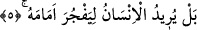

yeter.
Burada yer alan “belâ” olumsuzdan sonra zikredilen ve olumlu anlam veren bir tasdik
edâtıdır. Burada tasdik edilen olgu ise Allah’ın o kemikleri bir araya getireceği ve
toplayacağı olgusudur.
Bu açıklamaların ışığı altında âyet-i kerîmeye mânâ vermek gerekirse: Küçük ve ince
olmalarına rağmen biz insanoğlunun el ve ayak kemiklerini bir araya getirir, toplarız. Şu
hâlde durum böyle olunca büyük kemikleri nasıl toplamayalım?
Âyette parmak ucu anlamında “benân” kelimesi kullanılmıştır. Arapçada el ve ayak
parmakları anlamında “sülama” kelimesi de kullanılmaktadır. Bu kelime bir hadiste
aynı anlama kullanılmıştır. Peygamber (s.a.) Efendimiz şöyle buyurmuştur: “İnsanların
el ve ayaklarının parmaklarındaki her bir küçük kemik için üzerine güneşin doğduğu
her günün sadakası vardır.” [193] Yâni insanların el ve ayak parmaklarındaki her bir
küçük kemik için gerek söz gerek fiil ve gerekse mal cinsinden hangisi olursa olsun bir
sadaka vardır.
Kamus’ta “benân” kelimesi parmaklar ya da bunların uçları olarak açıklanmıştır.
Râğıb Isfahânî’ye göre parmaklara, “benân” denmesi insanın arzu ettiği şeyleri
bunlarla yapabilmesinden dolayıdır. Bu açıklamaya göre “benân” kelimesinin kökü,
yapmak, yerine getirmek anlamını ifâde eder. İşte bu anlamdan dolayıdır ki “biz onun
parmak uçlarını bile derleyip eski hâline getirmeye kadiriz” âyet-i kerîmesinde
özellikle parmak uçları zikredilmiştir. “Vurun onların bütün parmaklarına” (el-
Enfal, 8/12) âyetinde ise parmakların seçilmesinin nedeni kâfirlerin bunlarla -İslama
karşı- çarpışmalarından, kendilerini bunlarla savunmalarından dolayıdır.
Üzerinde durduğumuz, onun parmaklarını -ki bu “benân” o parmakların ucudur ve
parmağın iskeletinin son bulduğu noktadır- toplamaya bir araya getirmeye kadiriz.
“Benân”, kelime yapısı itibariyle tekil fakat anlam itibariyle çoğuldur. Bu kelimede iki
yön vardır. Birisi ‘küçüklük’, diğeri de ‘uç’ olmasıdır. Bu iki yönden hangisine bakacak
olursak matlup olan husus öncelikle sâbit olur. Bu nedenle âyette özel olarak
zikredilmiştir.
Öte yandan âyette “ızâm/kemikler”in zikredilmesi kulun gerek güzel gerek çirkin
büyük amellerine “benân/parmak uçları”nın zikredilmesi ise yine güzel ve çirkin olmak
üzere küçük amellerine işâret etmek içindir. O hâlde Allah bu amellerden her birini bir
araya toplayacak ve karşılığı ne ise onu kula verecektir.
5. Fakat insan önündekini (kıyâmeti) yalanlamak ister.
Âyette yer alan ve kötülük etmek anlamına tercüme edilen “yefcuru” fiilinin kökü olan
“el-fecru” herhangi bir şeyi genişçe yarmak demektir. Aynı kökten türeyen ve içinde